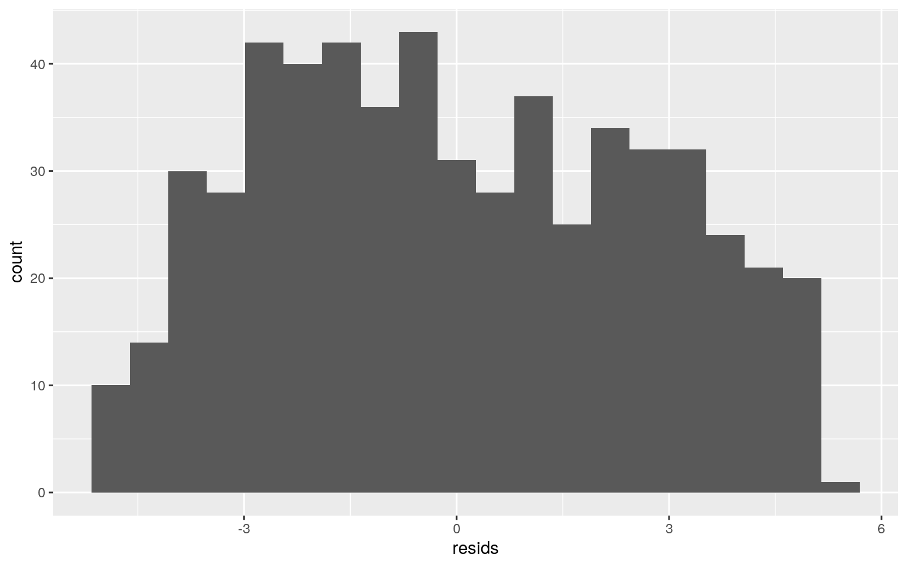
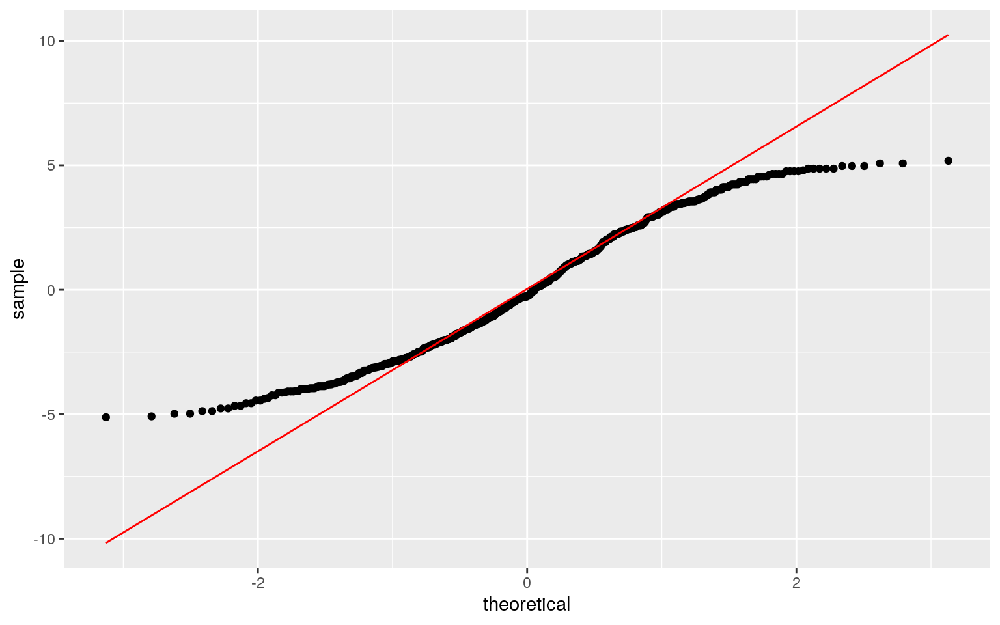
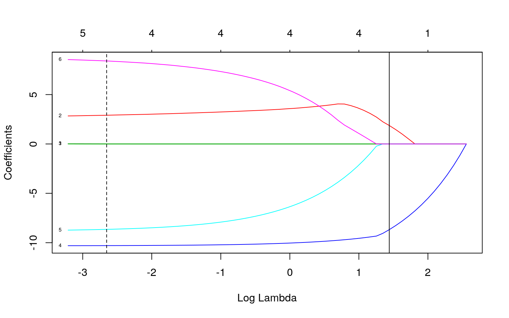
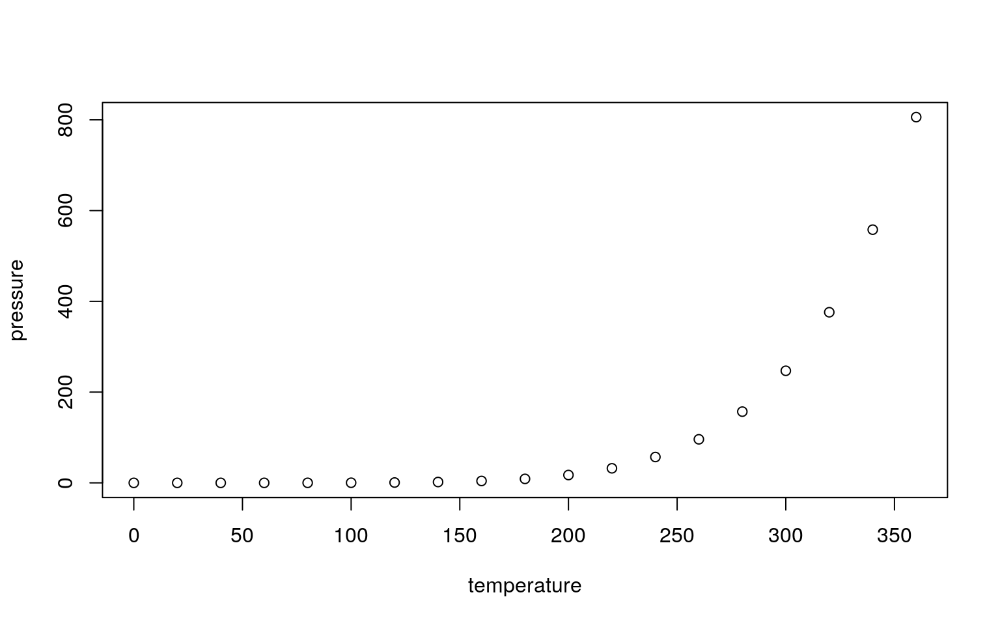

library(ggplot2)
library(dplyr)
library(tidyr)
library(tidyverse)
library(lmtest)
library(sandwich)my_data <- read.csv("aids.csv")set.seed(1234)
dplyr::sample_n(my_data,10)## X year quarter delay dud time y
## 1 65 1984 3 11 0 5 1
## 2 355 1989 2 26 0 24 0
## 3 347 1989 2 2 0 24 92
## 4 354 1989 2 23 0 24 3
## 5 488 1991 3 20 1 33 0
## 6 362 1989 3 2 0 25 104
## 7 6 1983 3 14 0 1 0
## 8 131 1985 3 29 0 9 2
## 9 375 1989 3 41 1 25 0
## 10 289 1988 2 8 0 20 9covmats <- my_data %>% group_by(year) %>% do(covs=cov(.[2:3]))
for (i in 1:10) {print(as.character(covmats$year[i])); print(covmats$covs[i])
}## [1] "1983"
## [[1]]
## year quarter
## year 0 0.0000000
## quarter 0 0.2586207
##
## [1] "1984"
## [[1]]
## year quarter
## year 0 0.000000
## quarter 0 1.271186
##
## [1] "1985"
## [[1]]
## year quarter
## year 0 0.000000
## quarter 0 1.271186
##
## [1] "1986"
## [[1]]
## year quarter
## year 0 0.000000
## quarter 0 1.271186
##
## [1] "1987"
## [[1]]
## year quarter
## year 0 0.000000
## quarter 0 1.271186
##
## [1] "1988"
## [[1]]
## year quarter
## year 0 0.000000
## quarter 0 1.271186
##
## [1] "1989"
## [[1]]
## year quarter
## year 0 0.000000
## quarter 0 1.271186
##
## [1] "1990"
## [[1]]
## year quarter
## year 0 0.000000
## quarter 0 1.271186
##
## [1] "1991"
## [[1]]
## year quarter
## year 0 0.000000
## quarter 0 1.271186
##
## [1] "1992"
## [[1]]
## year quarter
## year 0 0.000000
## quarter 0 1.271186man1 <- manova(cbind(delay,y)~year,data=my_data)
summary(man1)## Df Pillai approx F num Df den Df Pr(>F)
## year 1 0.077918 23.956 2 567 1.028e-10 ***
## Residuals 568
## ---
## Signif. codes: 0 '***' 0.001 '**' 0.01 '*' 0.05 '.' 0.1
' ' 1my_data %>% group_by(year) %>% summarize(mean(delay),mean(y))## # A tibble: 10 x 3
## year `mean(delay)` `mean(y)`
## <int> <dbl> <dbl>
## 1 1983 20.1 0.8
## 2 1984 20.1 1.63
## 3 1985 20.1 3.58
## 4 1986 20.1 7.18
## 5 1987 20.1 10.0
## 6 1988 20.1 13.6
## 7 1989 20.1 15.5
## 8 1990 20.1 17.8
## 9 1991 20.1 18.3
## 10 1992 20.1 17.2pairwise.t.test(my_data$delay, my_data$year, p.adj="none")##
## Pairwise comparisons using t tests with pooled SD
##
## data: my_data$delay and my_data$year
##
## 1983 1984 1985 1986 1987 1988 1989 1990 1991
## 1984 1 - - - - - - - -
## 1985 1 1 - - - - - - -
## 1986 1 1 1 - - - - - -
## 1987 1 1 1 1 - - - - -
## 1988 1 1 1 1 1 - - - -
## 1989 1 1 1 1 1 1 - - -
## 1990 1 1 1 1 1 1 1 - -
## 1991 1 1 1 1 1 1 1 1 -
## 1992 1 1 1 1 1 1 1 1 1
##
## P value adjustment method: nonepairwise.t.test(my_data$y, my_data$year,p.adj = "none")##
## Pairwise comparisons using t tests with pooled SD
##
## data: my_data$y and my_data$year
##
## 1983 1984 1985 1986 1987 1988 1989 1990 1991
## 1984 0.88041 - - - - - - - -
## 1985 0.61535 0.66636 - - - - - - -
## 1986 0.24941 0.22006 0.42615 - - - - - -
## 1987 0.09652 0.06419 0.15525 0.53106 - - - - -
## 1988 0.02148 0.00853 0.02762 0.15848 0.43260 - - - -
## 1989 0.00822 0.00229 0.00871 0.06687 0.22705 0.67173 - -
-
## 1990 0.00217 0.00036 0.00169 0.01863 0.08367 0.34377
0.60080 - -
## 1991 0.00166 0.00025 0.00120 0.01423 0.06742 0.29551
0.53348 0.92074 -
## 1992 0.00312 0.00060 0.00265 0.02660 0.11095 0.41764
0.69881 0.89154 0.81355
##
## P value adjustment method: noneWe see that there is a significant relationship between the delay in cases reported and cases reported within the specific years. Significant differences were found across the 10 year period, for at least one of the dependent variables, Pillai = 0.07, pseudo F = 23.96, p< 0.001. I completed 1 MANOVA and 2 t tests. According to the t-test, it appears that the ‘y’ group, the number of cases reported is the main group that differs throughout the years.
rand_dist <- vector()
for (i in 1:5000) {
new<- data.frame(delay = sample(my_data$delay), cases = my_data$y)
rand_dist[i] <- mean(new[new$delay == "1983",]$cases) -
mean(new[new$delay == "1984",]$cases)
}
rand_dist## [1] NaN NaN NaN NaN NaN NaN NaN NaN NaN NaN NaN NaN NaN
NaN NaN NaN NaN NaN NaN NaN NaN NaN NaN
## [24] NaN NaN NaN NaN NaN NaN NaN NaN NaN NaN NaN NaN NaN
NaN NaN NaN NaN NaN NaN NaN NaN NaN NaN
## [47] NaN NaN NaN NaN NaN NaN NaN NaN NaN NaN NaN NaN NaN
NaN NaN NaN NaN NaN NaN NaN NaN NaN NaN
## [70] NaN NaN NaN NaN NaN NaN NaN NaN NaN NaN NaN NaN NaN
NaN NaN NaN NaN NaN NaN NaN NaN NaN NaN
## [93] NaN NaN NaN NaN NaN NaN NaN NaN NaN NaN NaN NaN NaN
NaN NaN NaN NaN NaN NaN NaN NaN NaN NaN
## [116] NaN NaN NaN NaN NaN NaN NaN NaN NaN NaN NaN NaN
NaN NaN NaN NaN NaN NaN NaN NaN NaN NaN NaN
## [139] NaN NaN NaN NaN NaN NaN NaN NaN NaN NaN NaN NaN
NaN NaN NaN NaN NaN NaN NaN NaN NaN NaN NaN
## [162] NaN NaN NaN NaN NaN NaN NaN NaN NaN NaN NaN NaN
NaN NaN NaN NaN NaN NaN NaN NaN NaN NaN NaN
## [185] NaN NaN NaN NaN NaN NaN NaN NaN NaN NaN NaN NaN
NaN NaN NaN NaN NaN NaN NaN NaN NaN NaN NaN
## [208] NaN NaN NaN NaN NaN NaN NaN NaN NaN NaN NaN NaN
NaN NaN NaN NaN NaN NaN NaN NaN NaN NaN NaN
## [231] NaN NaN NaN NaN NaN NaN NaN NaN NaN NaN NaN NaN
NaN NaN NaN NaN NaN NaN NaN NaN NaN NaN NaN
## [254] NaN NaN NaN NaN NaN NaN NaN NaN NaN NaN NaN NaN
NaN NaN NaN NaN NaN NaN NaN NaN NaN NaN NaN
## [277] NaN NaN NaN NaN NaN NaN NaN NaN NaN NaN NaN NaN
NaN NaN NaN NaN NaN NaN NaN NaN NaN NaN NaN
## [300] NaN NaN NaN NaN NaN NaN NaN NaN NaN NaN NaN NaN
NaN NaN NaN NaN NaN NaN NaN NaN NaN NaN NaN
## [323] NaN NaN NaN NaN NaN NaN NaN NaN NaN NaN NaN NaN
NaN NaN NaN NaN NaN NaN NaN NaN NaN NaN NaN
## [346] NaN NaN NaN NaN NaN NaN NaN NaN NaN NaN NaN NaN
NaN NaN NaN NaN NaN NaN NaN NaN NaN NaN NaN
## [369] NaN NaN NaN NaN NaN NaN NaN NaN NaN NaN NaN NaN
NaN NaN NaN NaN NaN NaN NaN NaN NaN NaN NaN
## [392] NaN NaN NaN NaN NaN NaN NaN NaN NaN NaN NaN NaN
NaN NaN NaN NaN NaN NaN NaN NaN NaN NaN NaN
## [415] NaN NaN NaN NaN NaN NaN NaN NaN NaN NaN NaN NaN
NaN NaN NaN NaN NaN NaN NaN NaN NaN NaN NaN
## [438] NaN NaN NaN NaN NaN NaN NaN NaN NaN NaN NaN NaN
NaN NaN NaN NaN NaN NaN NaN NaN NaN NaN NaN
## [461] NaN NaN NaN NaN NaN NaN NaN NaN NaN NaN NaN NaN
NaN NaN NaN NaN NaN NaN NaN NaN NaN NaN NaN
## [484] NaN NaN NaN NaN NaN NaN NaN NaN NaN NaN NaN NaN
NaN NaN NaN NaN NaN NaN NaN NaN NaN NaN NaN
## [507] NaN NaN NaN NaN NaN NaN NaN NaN NaN NaN NaN NaN
NaN NaN NaN NaN NaN NaN NaN NaN NaN NaN NaN
## [530] NaN NaN NaN NaN NaN NaN NaN NaN NaN NaN NaN NaN
NaN NaN NaN NaN NaN NaN NaN NaN NaN NaN NaN
## [553] NaN NaN NaN NaN NaN NaN NaN NaN NaN NaN NaN NaN
NaN NaN NaN NaN NaN NaN NaN NaN NaN NaN NaN
## [576] NaN NaN NaN NaN NaN NaN NaN NaN NaN NaN NaN NaN
NaN NaN NaN NaN NaN NaN NaN NaN NaN NaN NaN
## [599] NaN NaN NaN NaN NaN NaN NaN NaN NaN NaN NaN NaN
NaN NaN NaN NaN NaN NaN NaN NaN NaN NaN NaN
## [622] NaN NaN NaN NaN NaN NaN NaN NaN NaN NaN NaN NaN
NaN NaN NaN NaN NaN NaN NaN NaN NaN NaN NaN
## [645] NaN NaN NaN NaN NaN NaN NaN NaN NaN NaN NaN NaN
NaN NaN NaN NaN NaN NaN NaN NaN NaN NaN NaN
## [668] NaN NaN NaN NaN NaN NaN NaN NaN NaN NaN NaN NaN
NaN NaN NaN NaN NaN NaN NaN NaN NaN NaN NaN
## [691] NaN NaN NaN NaN NaN NaN NaN NaN NaN NaN NaN NaN
NaN NaN NaN NaN NaN NaN NaN NaN NaN NaN NaN
## [714] NaN NaN NaN NaN NaN NaN NaN NaN NaN NaN NaN NaN
NaN NaN NaN NaN NaN NaN NaN NaN NaN NaN NaN
## [737] NaN NaN NaN NaN NaN NaN NaN NaN NaN NaN NaN NaN
NaN NaN NaN NaN NaN NaN NaN NaN NaN NaN NaN
## [760] NaN NaN NaN NaN NaN NaN NaN NaN NaN NaN NaN NaN
NaN NaN NaN NaN NaN NaN NaN NaN NaN NaN NaN
## [783] NaN NaN NaN NaN NaN NaN NaN NaN NaN NaN NaN NaN
NaN NaN NaN NaN NaN NaN NaN NaN NaN NaN NaN
## [806] NaN NaN NaN NaN NaN NaN NaN NaN NaN NaN NaN NaN
NaN NaN NaN NaN NaN NaN NaN NaN NaN NaN NaN
## [829] NaN NaN NaN NaN NaN NaN NaN NaN NaN NaN NaN NaN
NaN NaN NaN NaN NaN NaN NaN NaN NaN NaN NaN
## [852] NaN NaN NaN NaN NaN NaN NaN NaN NaN NaN NaN NaN
NaN NaN NaN NaN NaN NaN NaN NaN NaN NaN NaN
## [875] NaN NaN NaN NaN NaN NaN NaN NaN NaN NaN NaN NaN
NaN NaN NaN NaN NaN NaN NaN NaN NaN NaN NaN
## [898] NaN NaN NaN NaN NaN NaN NaN NaN NaN NaN NaN NaN
NaN NaN NaN NaN NaN NaN NaN NaN NaN NaN NaN
## [921] NaN NaN NaN NaN NaN NaN NaN NaN NaN NaN NaN NaN
NaN NaN NaN NaN NaN NaN NaN NaN NaN NaN NaN
## [944] NaN NaN NaN NaN NaN NaN NaN NaN NaN NaN NaN NaN
NaN NaN NaN NaN NaN NaN NaN NaN NaN NaN NaN
## [967] NaN NaN NaN NaN NaN NaN NaN NaN NaN NaN NaN NaN
NaN NaN NaN NaN NaN NaN NaN NaN NaN NaN NaN
## [990] NaN NaN NaN NaN NaN NaN NaN NaN NaN NaN NaN NaN
NaN NaN NaN NaN NaN NaN NaN NaN NaN NaN NaN
## [1013] NaN NaN NaN NaN NaN NaN NaN NaN NaN NaN NaN NaN
NaN NaN NaN NaN NaN NaN NaN NaN NaN NaN NaN
## [1036] NaN NaN NaN NaN NaN NaN NaN NaN NaN NaN NaN NaN
NaN NaN NaN NaN NaN NaN NaN NaN NaN NaN NaN
## [1059] NaN NaN NaN NaN NaN NaN NaN NaN NaN NaN NaN NaN
NaN NaN NaN NaN NaN NaN NaN NaN NaN NaN NaN
## [1082] NaN NaN NaN NaN NaN NaN NaN NaN NaN NaN NaN NaN
NaN NaN NaN NaN NaN NaN NaN NaN NaN NaN NaN
## [1105] NaN NaN NaN NaN NaN NaN NaN NaN NaN NaN NaN NaN
NaN NaN NaN NaN NaN NaN NaN NaN NaN NaN NaN
## [1128] NaN NaN NaN NaN NaN NaN NaN NaN NaN NaN NaN NaN
NaN NaN NaN NaN NaN NaN NaN NaN NaN NaN NaN
## [1151] NaN NaN NaN NaN NaN NaN NaN NaN NaN NaN NaN NaN
NaN NaN NaN NaN NaN NaN NaN NaN NaN NaN NaN
## [1174] NaN NaN NaN NaN NaN NaN NaN NaN NaN NaN NaN NaN
NaN NaN NaN NaN NaN NaN NaN NaN NaN NaN NaN
## [1197] NaN NaN NaN NaN NaN NaN NaN NaN NaN NaN NaN NaN
NaN NaN NaN NaN NaN NaN NaN NaN NaN NaN NaN
## [1220] NaN NaN NaN NaN NaN NaN NaN NaN NaN NaN NaN NaN
NaN NaN NaN NaN NaN NaN NaN NaN NaN NaN NaN
## [1243] NaN NaN NaN NaN NaN NaN NaN NaN NaN NaN NaN NaN
NaN NaN NaN NaN NaN NaN NaN NaN NaN NaN NaN
## [1266] NaN NaN NaN NaN NaN NaN NaN NaN NaN NaN NaN NaN
NaN NaN NaN NaN NaN NaN NaN NaN NaN NaN NaN
## [1289] NaN NaN NaN NaN NaN NaN NaN NaN NaN NaN NaN NaN
NaN NaN NaN NaN NaN NaN NaN NaN NaN NaN NaN
## [1312] NaN NaN NaN NaN NaN NaN NaN NaN NaN NaN NaN NaN
NaN NaN NaN NaN NaN NaN NaN NaN NaN NaN NaN
## [1335] NaN NaN NaN NaN NaN NaN NaN NaN NaN NaN NaN NaN
NaN NaN NaN NaN NaN NaN NaN NaN NaN NaN NaN
## [1358] NaN NaN NaN NaN NaN NaN NaN NaN NaN NaN NaN NaN
NaN NaN NaN NaN NaN NaN NaN NaN NaN NaN NaN
## [1381] NaN NaN NaN NaN NaN NaN NaN NaN NaN NaN NaN NaN
NaN NaN NaN NaN NaN NaN NaN NaN NaN NaN NaN
## [1404] NaN NaN NaN NaN NaN NaN NaN NaN NaN NaN NaN NaN
NaN NaN NaN NaN NaN NaN NaN NaN NaN NaN NaN
## [1427] NaN NaN NaN NaN NaN NaN NaN NaN NaN NaN NaN NaN
NaN NaN NaN NaN NaN NaN NaN NaN NaN NaN NaN
## [1450] NaN NaN NaN NaN NaN NaN NaN NaN NaN NaN NaN NaN
NaN NaN NaN NaN NaN NaN NaN NaN NaN NaN NaN
## [1473] NaN NaN NaN NaN NaN NaN NaN NaN NaN NaN NaN NaN
NaN NaN NaN NaN NaN NaN NaN NaN NaN NaN NaN
## [1496] NaN NaN NaN NaN NaN NaN NaN NaN NaN NaN NaN NaN
NaN NaN NaN NaN NaN NaN NaN NaN NaN NaN NaN
## [1519] NaN NaN NaN NaN NaN NaN NaN NaN NaN NaN NaN NaN
NaN NaN NaN NaN NaN NaN NaN NaN NaN NaN NaN
## [1542] NaN NaN NaN NaN NaN NaN NaN NaN NaN NaN NaN NaN
NaN NaN NaN NaN NaN NaN NaN NaN NaN NaN NaN
## [1565] NaN NaN NaN NaN NaN NaN NaN NaN NaN NaN NaN NaN
NaN NaN NaN NaN NaN NaN NaN NaN NaN NaN NaN
## [1588] NaN NaN NaN NaN NaN NaN NaN NaN NaN NaN NaN NaN
NaN NaN NaN NaN NaN NaN NaN NaN NaN NaN NaN
## [1611] NaN NaN NaN NaN NaN NaN NaN NaN NaN NaN NaN NaN
NaN NaN NaN NaN NaN NaN NaN NaN NaN NaN NaN
## [1634] NaN NaN NaN NaN NaN NaN NaN NaN NaN NaN NaN NaN
NaN NaN NaN NaN NaN NaN NaN NaN NaN NaN NaN
## [1657] NaN NaN NaN NaN NaN NaN NaN NaN NaN NaN NaN NaN
NaN NaN NaN NaN NaN NaN NaN NaN NaN NaN NaN
## [1680] NaN NaN NaN NaN NaN NaN NaN NaN NaN NaN NaN NaN
NaN NaN NaN NaN NaN NaN NaN NaN NaN NaN NaN
## [1703] NaN NaN NaN NaN NaN NaN NaN NaN NaN NaN NaN NaN
NaN NaN NaN NaN NaN NaN NaN NaN NaN NaN NaN
## [1726] NaN NaN NaN NaN NaN NaN NaN NaN NaN NaN NaN NaN
NaN NaN NaN NaN NaN NaN NaN NaN NaN NaN NaN
## [1749] NaN NaN NaN NaN NaN NaN NaN NaN NaN NaN NaN NaN
NaN NaN NaN NaN NaN NaN NaN NaN NaN NaN NaN
## [1772] NaN NaN NaN NaN NaN NaN NaN NaN NaN NaN NaN NaN
NaN NaN NaN NaN NaN NaN NaN NaN NaN NaN NaN
## [1795] NaN NaN NaN NaN NaN NaN NaN NaN NaN NaN NaN NaN
NaN NaN NaN NaN NaN NaN NaN NaN NaN NaN NaN
## [1818] NaN NaN NaN NaN NaN NaN NaN NaN NaN NaN NaN NaN
NaN NaN NaN NaN NaN NaN NaN NaN NaN NaN NaN
## [1841] NaN NaN NaN NaN NaN NaN NaN NaN NaN NaN NaN NaN
NaN NaN NaN NaN NaN NaN NaN NaN NaN NaN NaN
## [1864] NaN NaN NaN NaN NaN NaN NaN NaN NaN NaN NaN NaN
NaN NaN NaN NaN NaN NaN NaN NaN NaN NaN NaN
## [1887] NaN NaN NaN NaN NaN NaN NaN NaN NaN NaN NaN NaN
NaN NaN NaN NaN NaN NaN NaN NaN NaN NaN NaN
## [1910] NaN NaN NaN NaN NaN NaN NaN NaN NaN NaN NaN NaN
NaN NaN NaN NaN NaN NaN NaN NaN NaN NaN NaN
## [1933] NaN NaN NaN NaN NaN NaN NaN NaN NaN NaN NaN NaN
NaN NaN NaN NaN NaN NaN NaN NaN NaN NaN NaN
## [1956] NaN NaN NaN NaN NaN NaN NaN NaN NaN NaN NaN NaN
NaN NaN NaN NaN NaN NaN NaN NaN NaN NaN NaN
## [1979] NaN NaN NaN NaN NaN NaN NaN NaN NaN NaN NaN NaN
NaN NaN NaN NaN NaN NaN NaN NaN NaN NaN NaN
## [2002] NaN NaN NaN NaN NaN NaN NaN NaN NaN NaN NaN NaN
NaN NaN NaN NaN NaN NaN NaN NaN NaN NaN NaN
## [2025] NaN NaN NaN NaN NaN NaN NaN NaN NaN NaN NaN NaN
NaN NaN NaN NaN NaN NaN NaN NaN NaN NaN NaN
## [2048] NaN NaN NaN NaN NaN NaN NaN NaN NaN NaN NaN NaN
NaN NaN NaN NaN NaN NaN NaN NaN NaN NaN NaN
## [2071] NaN NaN NaN NaN NaN NaN NaN NaN NaN NaN NaN NaN
NaN NaN NaN NaN NaN NaN NaN NaN NaN NaN NaN
## [2094] NaN NaN NaN NaN NaN NaN NaN NaN NaN NaN NaN NaN
NaN NaN NaN NaN NaN NaN NaN NaN NaN NaN NaN
## [2117] NaN NaN NaN NaN NaN NaN NaN NaN NaN NaN NaN NaN
NaN NaN NaN NaN NaN NaN NaN NaN NaN NaN NaN
## [2140] NaN NaN NaN NaN NaN NaN NaN NaN NaN NaN NaN NaN
NaN NaN NaN NaN NaN NaN NaN NaN NaN NaN NaN
## [2163] NaN NaN NaN NaN NaN NaN NaN NaN NaN NaN NaN NaN
NaN NaN NaN NaN NaN NaN NaN NaN NaN NaN NaN
## [2186] NaN NaN NaN NaN NaN NaN NaN NaN NaN NaN NaN NaN
NaN NaN NaN NaN NaN NaN NaN NaN NaN NaN NaN
## [2209] NaN NaN NaN NaN NaN NaN NaN NaN NaN NaN NaN NaN
NaN NaN NaN NaN NaN NaN NaN NaN NaN NaN NaN
## [2232] NaN NaN NaN NaN NaN NaN NaN NaN NaN NaN NaN NaN
NaN NaN NaN NaN NaN NaN NaN NaN NaN NaN NaN
## [2255] NaN NaN NaN NaN NaN NaN NaN NaN NaN NaN NaN NaN
NaN NaN NaN NaN NaN NaN NaN NaN NaN NaN NaN
## [2278] NaN NaN NaN NaN NaN NaN NaN NaN NaN NaN NaN NaN
NaN NaN NaN NaN NaN NaN NaN NaN NaN NaN NaN
## [2301] NaN NaN NaN NaN NaN NaN NaN NaN NaN NaN NaN NaN
NaN NaN NaN NaN NaN NaN NaN NaN NaN NaN NaN
## [2324] NaN NaN NaN NaN NaN NaN NaN NaN NaN NaN NaN NaN
NaN NaN NaN NaN NaN NaN NaN NaN NaN NaN NaN
## [2347] NaN NaN NaN NaN NaN NaN NaN NaN NaN NaN NaN NaN
NaN NaN NaN NaN NaN NaN NaN NaN NaN NaN NaN
## [2370] NaN NaN NaN NaN NaN NaN NaN NaN NaN NaN NaN NaN
NaN NaN NaN NaN NaN NaN NaN NaN NaN NaN NaN
## [2393] NaN NaN NaN NaN NaN NaN NaN NaN NaN NaN NaN NaN
NaN NaN NaN NaN NaN NaN NaN NaN NaN NaN NaN
## [2416] NaN NaN NaN NaN NaN NaN NaN NaN NaN NaN NaN NaN
NaN NaN NaN NaN NaN NaN NaN NaN NaN NaN NaN
## [2439] NaN NaN NaN NaN NaN NaN NaN NaN NaN NaN NaN NaN
NaN NaN NaN NaN NaN NaN NaN NaN NaN NaN NaN
## [2462] NaN NaN NaN NaN NaN NaN NaN NaN NaN NaN NaN NaN
NaN NaN NaN NaN NaN NaN NaN NaN NaN NaN NaN
## [2485] NaN NaN NaN NaN NaN NaN NaN NaN NaN NaN NaN NaN
NaN NaN NaN NaN NaN NaN NaN NaN NaN NaN NaN
## [2508] NaN NaN NaN NaN NaN NaN NaN NaN NaN NaN NaN NaN
NaN NaN NaN NaN NaN NaN NaN NaN NaN NaN NaN
## [2531] NaN NaN NaN NaN NaN NaN NaN NaN NaN NaN NaN NaN
NaN NaN NaN NaN NaN NaN NaN NaN NaN NaN NaN
## [2554] NaN NaN NaN NaN NaN NaN NaN NaN NaN NaN NaN NaN
NaN NaN NaN NaN NaN NaN NaN NaN NaN NaN NaN
## [2577] NaN NaN NaN NaN NaN NaN NaN NaN NaN NaN NaN NaN
NaN NaN NaN NaN NaN NaN NaN NaN NaN NaN NaN
## [2600] NaN NaN NaN NaN NaN NaN NaN NaN NaN NaN NaN NaN
NaN NaN NaN NaN NaN NaN NaN NaN NaN NaN NaN
## [2623] NaN NaN NaN NaN NaN NaN NaN NaN NaN NaN NaN NaN
NaN NaN NaN NaN NaN NaN NaN NaN NaN NaN NaN
## [2646] NaN NaN NaN NaN NaN NaN NaN NaN NaN NaN NaN NaN
NaN NaN NaN NaN NaN NaN NaN NaN NaN NaN NaN
## [2669] NaN NaN NaN NaN NaN NaN NaN NaN NaN NaN NaN NaN
NaN NaN NaN NaN NaN NaN NaN NaN NaN NaN NaN
## [2692] NaN NaN NaN NaN NaN NaN NaN NaN NaN NaN NaN NaN
NaN NaN NaN NaN NaN NaN NaN NaN NaN NaN NaN
## [2715] NaN NaN NaN NaN NaN NaN NaN NaN NaN NaN NaN NaN
NaN NaN NaN NaN NaN NaN NaN NaN NaN NaN NaN
## [2738] NaN NaN NaN NaN NaN NaN NaN NaN NaN NaN NaN NaN
NaN NaN NaN NaN NaN NaN NaN NaN NaN NaN NaN
## [2761] NaN NaN NaN NaN NaN NaN NaN NaN NaN NaN NaN NaN
NaN NaN NaN NaN NaN NaN NaN NaN NaN NaN NaN
## [2784] NaN NaN NaN NaN NaN NaN NaN NaN NaN NaN NaN NaN
NaN NaN NaN NaN NaN NaN NaN NaN NaN NaN NaN
## [2807] NaN NaN NaN NaN NaN NaN NaN NaN NaN NaN NaN NaN
NaN NaN NaN NaN NaN NaN NaN NaN NaN NaN NaN
## [2830] NaN NaN NaN NaN NaN NaN NaN NaN NaN NaN NaN NaN
NaN NaN NaN NaN NaN NaN NaN NaN NaN NaN NaN
## [2853] NaN NaN NaN NaN NaN NaN NaN NaN NaN NaN NaN NaN
NaN NaN NaN NaN NaN NaN NaN NaN NaN NaN NaN
## [2876] NaN NaN NaN NaN NaN NaN NaN NaN NaN NaN NaN NaN
NaN NaN NaN NaN NaN NaN NaN NaN NaN NaN NaN
## [2899] NaN NaN NaN NaN NaN NaN NaN NaN NaN NaN NaN NaN
NaN NaN NaN NaN NaN NaN NaN NaN NaN NaN NaN
## [2922] NaN NaN NaN NaN NaN NaN NaN NaN NaN NaN NaN NaN
NaN NaN NaN NaN NaN NaN NaN NaN NaN NaN NaN
## [2945] NaN NaN NaN NaN NaN NaN NaN NaN NaN NaN NaN NaN
NaN NaN NaN NaN NaN NaN NaN NaN NaN NaN NaN
## [2968] NaN NaN NaN NaN NaN NaN NaN NaN NaN NaN NaN NaN
NaN NaN NaN NaN NaN NaN NaN NaN NaN NaN NaN
## [2991] NaN NaN NaN NaN NaN NaN NaN NaN NaN NaN NaN NaN
NaN NaN NaN NaN NaN NaN NaN NaN NaN NaN NaN
## [3014] NaN NaN NaN NaN NaN NaN NaN NaN NaN NaN NaN NaN
NaN NaN NaN NaN NaN NaN NaN NaN NaN NaN NaN
## [3037] NaN NaN NaN NaN NaN NaN NaN NaN NaN NaN NaN NaN
NaN NaN NaN NaN NaN NaN NaN NaN NaN NaN NaN
## [3060] NaN NaN NaN NaN NaN NaN NaN NaN NaN NaN NaN NaN
NaN NaN NaN NaN NaN NaN NaN NaN NaN NaN NaN
## [3083] NaN NaN NaN NaN NaN NaN NaN NaN NaN NaN NaN NaN
NaN NaN NaN NaN NaN NaN NaN NaN NaN NaN NaN
## [3106] NaN NaN NaN NaN NaN NaN NaN NaN NaN NaN NaN NaN
NaN NaN NaN NaN NaN NaN NaN NaN NaN NaN NaN
## [3129] NaN NaN NaN NaN NaN NaN NaN NaN NaN NaN NaN NaN
NaN NaN NaN NaN NaN NaN NaN NaN NaN NaN NaN
## [3152] NaN NaN NaN NaN NaN NaN NaN NaN NaN NaN NaN NaN
NaN NaN NaN NaN NaN NaN NaN NaN NaN NaN NaN
## [3175] NaN NaN NaN NaN NaN NaN NaN NaN NaN NaN NaN NaN
NaN NaN NaN NaN NaN NaN NaN NaN NaN NaN NaN
## [3198] NaN NaN NaN NaN NaN NaN NaN NaN NaN NaN NaN NaN
NaN NaN NaN NaN NaN NaN NaN NaN NaN NaN NaN
## [3221] NaN NaN NaN NaN NaN NaN NaN NaN NaN NaN NaN NaN
NaN NaN NaN NaN NaN NaN NaN NaN NaN NaN NaN
## [3244] NaN NaN NaN NaN NaN NaN NaN NaN NaN NaN NaN NaN
NaN NaN NaN NaN NaN NaN NaN NaN NaN NaN NaN
## [3267] NaN NaN NaN NaN NaN NaN NaN NaN NaN NaN NaN NaN
NaN NaN NaN NaN NaN NaN NaN NaN NaN NaN NaN
## [3290] NaN NaN NaN NaN NaN NaN NaN NaN NaN NaN NaN NaN
NaN NaN NaN NaN NaN NaN NaN NaN NaN NaN NaN
## [3313] NaN NaN NaN NaN NaN NaN NaN NaN NaN NaN NaN NaN
NaN NaN NaN NaN NaN NaN NaN NaN NaN NaN NaN
## [3336] NaN NaN NaN NaN NaN NaN NaN NaN NaN NaN NaN NaN
NaN NaN NaN NaN NaN NaN NaN NaN NaN NaN NaN
## [3359] NaN NaN NaN NaN NaN NaN NaN NaN NaN NaN NaN NaN
NaN NaN NaN NaN NaN NaN NaN NaN NaN NaN NaN
## [3382] NaN NaN NaN NaN NaN NaN NaN NaN NaN NaN NaN NaN
NaN NaN NaN NaN NaN NaN NaN NaN NaN NaN NaN
## [3405] NaN NaN NaN NaN NaN NaN NaN NaN NaN NaN NaN NaN
NaN NaN NaN NaN NaN NaN NaN NaN NaN NaN NaN
## [3428] NaN NaN NaN NaN NaN NaN NaN NaN NaN NaN NaN NaN
NaN NaN NaN NaN NaN NaN NaN NaN NaN NaN NaN
## [3451] NaN NaN NaN NaN NaN NaN NaN NaN NaN NaN NaN NaN
NaN NaN NaN NaN NaN NaN NaN NaN NaN NaN NaN
## [3474] NaN NaN NaN NaN NaN NaN NaN NaN NaN NaN NaN NaN
NaN NaN NaN NaN NaN NaN NaN NaN NaN NaN NaN
## [3497] NaN NaN NaN NaN NaN NaN NaN NaN NaN NaN NaN NaN
NaN NaN NaN NaN NaN NaN NaN NaN NaN NaN NaN
## [3520] NaN NaN NaN NaN NaN NaN NaN NaN NaN NaN NaN NaN
NaN NaN NaN NaN NaN NaN NaN NaN NaN NaN NaN
## [3543] NaN NaN NaN NaN NaN NaN NaN NaN NaN NaN NaN NaN
NaN NaN NaN NaN NaN NaN NaN NaN NaN NaN NaN
## [3566] NaN NaN NaN NaN NaN NaN NaN NaN NaN NaN NaN NaN
NaN NaN NaN NaN NaN NaN NaN NaN NaN NaN NaN
## [3589] NaN NaN NaN NaN NaN NaN NaN NaN NaN NaN NaN NaN
NaN NaN NaN NaN NaN NaN NaN NaN NaN NaN NaN
## [3612] NaN NaN NaN NaN NaN NaN NaN NaN NaN NaN NaN NaN
NaN NaN NaN NaN NaN NaN NaN NaN NaN NaN NaN
## [3635] NaN NaN NaN NaN NaN NaN NaN NaN NaN NaN NaN NaN
NaN NaN NaN NaN NaN NaN NaN NaN NaN NaN NaN
## [3658] NaN NaN NaN NaN NaN NaN NaN NaN NaN NaN NaN NaN
NaN NaN NaN NaN NaN NaN NaN NaN NaN NaN NaN
## [3681] NaN NaN NaN NaN NaN NaN NaN NaN NaN NaN NaN NaN
NaN NaN NaN NaN NaN NaN NaN NaN NaN NaN NaN
## [3704] NaN NaN NaN NaN NaN NaN NaN NaN NaN NaN NaN NaN
NaN NaN NaN NaN NaN NaN NaN NaN NaN NaN NaN
## [3727] NaN NaN NaN NaN NaN NaN NaN NaN NaN NaN NaN NaN
NaN NaN NaN NaN NaN NaN NaN NaN NaN NaN NaN
## [3750] NaN NaN NaN NaN NaN NaN NaN NaN NaN NaN NaN NaN
NaN NaN NaN NaN NaN NaN NaN NaN NaN NaN NaN
## [3773] NaN NaN NaN NaN NaN NaN NaN NaN NaN NaN NaN NaN
NaN NaN NaN NaN NaN NaN NaN NaN NaN NaN NaN
## [3796] NaN NaN NaN NaN NaN NaN NaN NaN NaN NaN NaN NaN
NaN NaN NaN NaN NaN NaN NaN NaN NaN NaN NaN
## [3819] NaN NaN NaN NaN NaN NaN NaN NaN NaN NaN NaN NaN
NaN NaN NaN NaN NaN NaN NaN NaN NaN NaN NaN
## [3842] NaN NaN NaN NaN NaN NaN NaN NaN NaN NaN NaN NaN
NaN NaN NaN NaN NaN NaN NaN NaN NaN NaN NaN
## [3865] NaN NaN NaN NaN NaN NaN NaN NaN NaN NaN NaN NaN
NaN NaN NaN NaN NaN NaN NaN NaN NaN NaN NaN
## [3888] NaN NaN NaN NaN NaN NaN NaN NaN NaN NaN NaN NaN
NaN NaN NaN NaN NaN NaN NaN NaN NaN NaN NaN
## [3911] NaN NaN NaN NaN NaN NaN NaN NaN NaN NaN NaN NaN
NaN NaN NaN NaN NaN NaN NaN NaN NaN NaN NaN
## [3934] NaN NaN NaN NaN NaN NaN NaN NaN NaN NaN NaN NaN
NaN NaN NaN NaN NaN NaN NaN NaN NaN NaN NaN
## [3957] NaN NaN NaN NaN NaN NaN NaN NaN NaN NaN NaN NaN
NaN NaN NaN NaN NaN NaN NaN NaN NaN NaN NaN
## [3980] NaN NaN NaN NaN NaN NaN NaN NaN NaN NaN NaN NaN
NaN NaN NaN NaN NaN NaN NaN NaN NaN NaN NaN
## [4003] NaN NaN NaN NaN NaN NaN NaN NaN NaN NaN NaN NaN
NaN NaN NaN NaN NaN NaN NaN NaN NaN NaN NaN
## [4026] NaN NaN NaN NaN NaN NaN NaN NaN NaN NaN NaN NaN
NaN NaN NaN NaN NaN NaN NaN NaN NaN NaN NaN
## [4049] NaN NaN NaN NaN NaN NaN NaN NaN NaN NaN NaN NaN
NaN NaN NaN NaN NaN NaN NaN NaN NaN NaN NaN
## [4072] NaN NaN NaN NaN NaN NaN NaN NaN NaN NaN NaN NaN
NaN NaN NaN NaN NaN NaN NaN NaN NaN NaN NaN
## [4095] NaN NaN NaN NaN NaN NaN NaN NaN NaN NaN NaN NaN
NaN NaN NaN NaN NaN NaN NaN NaN NaN NaN NaN
## [4118] NaN NaN NaN NaN NaN NaN NaN NaN NaN NaN NaN NaN
NaN NaN NaN NaN NaN NaN NaN NaN NaN NaN NaN
## [4141] NaN NaN NaN NaN NaN NaN NaN NaN NaN NaN NaN NaN
NaN NaN NaN NaN NaN NaN NaN NaN NaN NaN NaN
## [4164] NaN NaN NaN NaN NaN NaN NaN NaN NaN NaN NaN NaN
NaN NaN NaN NaN NaN NaN NaN NaN NaN NaN NaN
## [4187] NaN NaN NaN NaN NaN NaN NaN NaN NaN NaN NaN NaN
NaN NaN NaN NaN NaN NaN NaN NaN NaN NaN NaN
## [4210] NaN NaN NaN NaN NaN NaN NaN NaN NaN NaN NaN NaN
NaN NaN NaN NaN NaN NaN NaN NaN NaN NaN NaN
## [4233] NaN NaN NaN NaN NaN NaN NaN NaN NaN NaN NaN NaN
NaN NaN NaN NaN NaN NaN NaN NaN NaN NaN NaN
## [4256] NaN NaN NaN NaN NaN NaN NaN NaN NaN NaN NaN NaN
NaN NaN NaN NaN NaN NaN NaN NaN NaN NaN NaN
## [4279] NaN NaN NaN NaN NaN NaN NaN NaN NaN NaN NaN NaN
NaN NaN NaN NaN NaN NaN NaN NaN NaN NaN NaN
## [4302] NaN NaN NaN NaN NaN NaN NaN NaN NaN NaN NaN NaN
NaN NaN NaN NaN NaN NaN NaN NaN NaN NaN NaN
## [4325] NaN NaN NaN NaN NaN NaN NaN NaN NaN NaN NaN NaN
NaN NaN NaN NaN NaN NaN NaN NaN NaN NaN NaN
## [4348] NaN NaN NaN NaN NaN NaN NaN NaN NaN NaN NaN NaN
NaN NaN NaN NaN NaN NaN NaN NaN NaN NaN NaN
## [4371] NaN NaN NaN NaN NaN NaN NaN NaN NaN NaN NaN NaN
NaN NaN NaN NaN NaN NaN NaN NaN NaN NaN NaN
## [4394] NaN NaN NaN NaN NaN NaN NaN NaN NaN NaN NaN NaN
NaN NaN NaN NaN NaN NaN NaN NaN NaN NaN NaN
## [4417] NaN NaN NaN NaN NaN NaN NaN NaN NaN NaN NaN NaN
NaN NaN NaN NaN NaN NaN NaN NaN NaN NaN NaN
## [4440] NaN NaN NaN NaN NaN NaN NaN NaN NaN NaN NaN NaN
NaN NaN NaN NaN NaN NaN NaN NaN NaN NaN NaN
## [4463] NaN NaN NaN NaN NaN NaN NaN NaN NaN NaN NaN NaN
NaN NaN NaN NaN NaN NaN NaN NaN NaN NaN NaN
## [4486] NaN NaN NaN NaN NaN NaN NaN NaN NaN NaN NaN NaN
NaN NaN NaN NaN NaN NaN NaN NaN NaN NaN NaN
## [4509] NaN NaN NaN NaN NaN NaN NaN NaN NaN NaN NaN NaN
NaN NaN NaN NaN NaN NaN NaN NaN NaN NaN NaN
## [4532] NaN NaN NaN NaN NaN NaN NaN NaN NaN NaN NaN NaN
NaN NaN NaN NaN NaN NaN NaN NaN NaN NaN NaN
## [4555] NaN NaN NaN NaN NaN NaN NaN NaN NaN NaN NaN NaN
NaN NaN NaN NaN NaN NaN NaN NaN NaN NaN NaN
## [4578] NaN NaN NaN NaN NaN NaN NaN NaN NaN NaN NaN NaN
NaN NaN NaN NaN NaN NaN NaN NaN NaN NaN NaN
## [4601] NaN NaN NaN NaN NaN NaN NaN NaN NaN NaN NaN NaN
NaN NaN NaN NaN NaN NaN NaN NaN NaN NaN NaN
## [4624] NaN NaN NaN NaN NaN NaN NaN NaN NaN NaN NaN NaN
NaN NaN NaN NaN NaN NaN NaN NaN NaN NaN NaN
## [4647] NaN NaN NaN NaN NaN NaN NaN NaN NaN NaN NaN NaN
NaN NaN NaN NaN NaN NaN NaN NaN NaN NaN NaN
## [4670] NaN NaN NaN NaN NaN NaN NaN NaN NaN NaN NaN NaN
NaN NaN NaN NaN NaN NaN NaN NaN NaN NaN NaN
## [4693] NaN NaN NaN NaN NaN NaN NaN NaN NaN NaN NaN NaN
NaN NaN NaN NaN NaN NaN NaN NaN NaN NaN NaN
## [4716] NaN NaN NaN NaN NaN NaN NaN NaN NaN NaN NaN NaN
NaN NaN NaN NaN NaN NaN NaN NaN NaN NaN NaN
## [4739] NaN NaN NaN NaN NaN NaN NaN NaN NaN NaN NaN NaN
NaN NaN NaN NaN NaN NaN NaN NaN NaN NaN NaN
## [4762] NaN NaN NaN NaN NaN NaN NaN NaN NaN NaN NaN NaN
NaN NaN NaN NaN NaN NaN NaN NaN NaN NaN NaN
## [4785] NaN NaN NaN NaN NaN NaN NaN NaN NaN NaN NaN NaN
NaN NaN NaN NaN NaN NaN NaN NaN NaN NaN NaN
## [4808] NaN NaN NaN NaN NaN NaN NaN NaN NaN NaN NaN NaN
NaN NaN NaN NaN NaN NaN NaN NaN NaN NaN NaN
## [4831] NaN NaN NaN NaN NaN NaN NaN NaN NaN NaN NaN NaN
NaN NaN NaN NaN NaN NaN NaN NaN NaN NaN NaN
## [4854] NaN NaN NaN NaN NaN NaN NaN NaN NaN NaN NaN NaN
NaN NaN NaN NaN NaN NaN NaN NaN NaN NaN NaN
## [4877] NaN NaN NaN NaN NaN NaN NaN NaN NaN NaN NaN NaN
NaN NaN NaN NaN NaN NaN NaN NaN NaN NaN NaN
## [4900] NaN NaN NaN NaN NaN NaN NaN NaN NaN NaN NaN NaN
NaN NaN NaN NaN NaN NaN NaN NaN NaN NaN NaN
## [4923] NaN NaN NaN NaN NaN NaN NaN NaN NaN NaN NaN NaN
NaN NaN NaN NaN NaN NaN NaN NaN NaN NaN NaN
## [4946] NaN NaN NaN NaN NaN NaN NaN NaN NaN NaN NaN NaN
NaN NaN NaN NaN NaN NaN NaN NaN NaN NaN NaN
## [4969] NaN NaN NaN NaN NaN NaN NaN NaN NaN NaN NaN NaN
NaN NaN NaN NaN NaN NaN NaN NaN NaN NaN NaN
## [4992] NaN NaN NaN NaN NaN NaN NaN NaN NaNI was unable to conduct a randomization test that made sense in this dataset
# Ho : Controlling for year, delay does not explain variation in cases
# Ha : Controlling for delay, year does not explain variation in cases
fit <- lm(year ~ delay + y, data = my_data); summary(fit)##
## Call:
## lm(formula = year ~ delay + y, data = my_data)
##
## Residuals:
## Min 1Q Median 3Q Max
## -5.1209 -2.1648 -0.2555 2.2349 5.1848
##
## Coefficients:
## Estimate Std. Error t value Pr(>|t|)
## (Intercept) 1.987e+03 2.597e-01 7650.370 < 2e-16 ***
## delay 3.529e-02 1.002e-02 3.522 0.000463 ***
## y 3.520e-02 5.085e-03 6.922 1.21e-11 ***
## ---
## Signif. codes: 0 '***' 0.001 '**' 0.01 '*' 0.05 '.' 0.1
' ' 1
##
## Residual standard error: 2.648 on 567 degrees of freedom
## Multiple R-squared: 0.07792, Adjusted R-squared: 0.07467
## F-statistic: 23.96 on 2 and 567 DF, p-value: 1.028e-10resids <- fit$residuals
fitted <- fit$fitted.values
ggplot()+geom_histogram(aes(resids),bins=20)
ggplot()+geom_qq(aes(sample=resids))+geom_qq_line(aes(sample=resids), color='red')
ks.test(resids, "pnorm", mean = 0, sd(resids))##
## One-sample Kolmogorov-Smirnov test
##
## data: resids
## D = 0.060446, p-value = 0.03105
## alternative hypothesis: two-sidedshapiro.test(resids)##
## Shapiro-Wilk normality test
##
## data: resids
## W = 0.96852, p-value = 1.035e-09summary(fit)##
## Call:
## lm(formula = year ~ delay + y, data = my_data)
##
## Residuals:
## Min 1Q Median 3Q Max
## -5.1209 -2.1648 -0.2555 2.2349 5.1848
##
## Coefficients:
## Estimate Std. Error t value Pr(>|t|)
## (Intercept) 1.987e+03 2.597e-01 7650.370 < 2e-16 ***
## delay 3.529e-02 1.002e-02 3.522 0.000463 ***
## y 3.520e-02 5.085e-03 6.922 1.21e-11 ***
## ---
## Signif. codes: 0 '***' 0.001 '**' 0.01 '*' 0.05 '.' 0.1
' ' 1
##
## Residual standard error: 2.648 on 567 degrees of freedom
## Multiple R-squared: 0.07792, Adjusted R-squared: 0.07467
## F-statistic: 23.96 on 2 and 567 DF, p-value: 1.028e-10summary(fit)$coef[,1:2]## Estimate Std. Error
## (Intercept) 1.986639e+03 0.259678789
## delay 3.529347e-02 0.010020689
## y 3.519575e-02 0.005084692coeftest(fit,vcov. = vcovHC(fit))[,1:2]## Estimate Std. Error
## (Intercept) 1.986639e+03 0.255247692
## delay 3.529347e-02 0.009970573
## y 3.519575e-02 0.003695266Upon graphically observing the data, it doesn’t appear to meet our assumptions for normality. We can formally test for this by using the ks.test. We received extremely low p-values.
boot_dat <- sample_frac(my_data,replace = T)
samp_distn <- replicate(5000, {
boot_dat <- sample_frac(my_data, replace =T)
fit <- lm(year ~ delay + y, data = boot_dat)
coef(fit)
})
samp_distn %>% t %>% as.data.frame %>% summarize_all(sd)## (Intercept) delay y
## 1 0.2517533 0.009883896 0.003816232samp_distn %>% t %>% as.data.frame %>% gather %>% group_by(key) %>% summarize(lower=quantile(value,.025), upper=quantile(value,.975))## # A tibble: 3 x 3
## key lower upper
## <chr> <dbl> <dbl>
## 1 (Intercept) 1986. 1987.
## 2 delay 0.0158 0.0546
## 3 y 0.0288 0.0438coeftest(fit)[,1:2]## Estimate Std. Error
## (Intercept) 1.986639e+03 0.259678789
## delay 3.529347e-02 0.010020689
## y 3.519575e-02 0.005084692coeftest(fit,vcov. = vcovHC(fit))[,1:2]## Estimate Std. Error
## (Intercept) 1.986639e+03 0.255247692
## delay 3.529347e-02 0.009970573
## y 3.519575e-02 0.003695266samp_distn %>% t %>% as.data.frame %>% summarize_all(sd)## (Intercept) delay y
## 1 0.2517533 0.009883896 0.003816232We see that the bootstrapped is closer to the robust values
fitz <- lm(year~y, data = my_data)
summary(fitz)##
## Call:
## lm(formula = year ~ y, data = my_data)
##
## Residuals:
## Min 1Q Median 3Q Max
## -4.6304 -2.4479 -0.2565 2.3891 4.5521
##
## Coefficients:
## Estimate Std. Error t value Pr(>|t|)
## (Intercept) 1.987e+03 1.222e-01 16257.7 < 2e-16 ***
## y 2.608e-02 4.421e-03 5.9 6.25e-09 ***
## ---
## Signif. codes: 0 '***' 0.001 '**' 0.01 '*' 0.05 '.' 0.1
' ' 1
##
## Residual standard error: 2.674 on 568 degrees of freedom
## Multiple R-squared: 0.05774, Adjusted R-squared: 0.05609
## F-statistic: 34.81 on 1 and 568 DF, p-value: 6.253e-09predict(fitz,newdata = data.frame(y = c(1,10)))## 1 2
## 1987.474 1987.709fit <- glm(year~y, data = my_data)
coeftest(fit)##
## z test of coefficients:
##
## Estimate Std. Error z value Pr(>|z|)
## (Intercept) 1.9874e+03 1.2225e-01 16257.7306 < 2.2e-16
***
## y 2.6083e-02 4.4210e-03 5.8999 3.637e-09 ***
## ---
## Signif. codes: 0 '***' 0.001 '**' 0.01 '*' 0.05 '.' 0.1
' ' 1exp(coef(fit))## (Intercept) y
## Inf 1.026427predict(fit,newdata = data.frame(y = 10), type ="response")## 1
## 1987.709table(truth = my_data$year, prediction = my_data$dud) %>% addmargins()## prediction
## truth 0 1 Sum
## 1983 30 0 30
## 1984 60 0 60
## 1985 60 0 60
## 1986 60 0 60
## 1987 60 0 60
## 1988 60 0 60
## 1989 57 3 60
## 1990 42 18 60
## 1991 26 34 60
## 1992 10 50 60
## Sum 465 105 570I attempted to create an ROC graph, but my results were not printing out, and I didn’t know why that was. Wasn’t receiving an error code either
library(glmnet)
y <- as.matrix(my_data$y)
x <- model.matrix(y~., data = my_data)[,-1]
head(x)## X year quarter delay dud time
## 1 1 1983 3 0 0 1
## 2 2 1983 3 2 0 1
## 3 3 1983 3 5 0 1
## 4 4 1983 3 8 0 1
## 5 5 1983 3 11 0 1
## 6 6 1983 3 14 0 1x<- scale(x)
cv <- cv.glmnet(x,y)
{plot(cv$glmnet.fit, "lambda", label=TRUE); abline(v = log(cv$lambda.1se)); abline(v = log(cv$lambda.min),lty=2)}
lasso <- glmnet(x,y,lambda = cv$lambda.1se)
coef(lasso)## 7 x 1 sparse Matrix of class "dgCMatrix"
## s0
## (Intercept) 11.078947
## X .
## year 1.868384
## quarter .
## delay -8.677479
## dud .
## time .
## DO NOT DELETE THIS BLOCK!
sessionInfo()## R version 3.4.4 (2018-03-15)
## Platform: x86_64-pc-linux-gnu (64-bit)
## Running under: Ubuntu 18.04.4 LTS
##
## Matrix products: default
## BLAS: /usr/lib/x86_64-linux-gnu/openblas/libblas.so.3
## LAPACK:
/usr/lib/x86_64-linux-gnu/libopenblasp-r0.2.20.so
##
## locale:
## [1] LC_CTYPE=en_US.UTF-8 LC_NUMERIC=C
LC_TIME=en_US.UTF-8
## [4] LC_COLLATE=en_US.UTF-8 LC_MONETARY=en_US.UTF-8
LC_MESSAGES=en_US.UTF-8
## [7] LC_PAPER=en_US.UTF-8 LC_NAME=C LC_ADDRESS=C
## [10] LC_TELEPHONE=C LC_MEASUREMENT=en_US.UTF-8
LC_IDENTIFICATION=C
##
## attached base packages:
## [1] methods stats graphics grDevices utils datasets base
##
## other attached packages:
## [1] glmnet_2.0-16 foreach_1.4.4 Matrix_1.2-12
sandwich_2.5-1 lmtest_0.9-37
## [6] zoo_1.8-6 forcats_0.4.0 stringr_1.4.0 dplyr_0.8.4
purrr_0.3.3
## [11] readr_1.3.1 tidyr_1.0.0.9000 tibble_2.1.3
ggplot2_3.2.1 tidyverse_1.3.0
## [16] knitr_1.28
##
## loaded via a namespace (and not attached):
## [1] Rcpp_1.0.2 lubridate_1.7.4 lattice_0.20-35
assertthat_0.2.1 zeallot_0.1.0
## [6] digest_0.6.20 utf8_1.1.4 R6_2.4.0 cellranger_1.1.0
backports_1.1.4
## [11] reprex_0.3.0 evaluate_0.14 httr_1.4.1 blogdown_0.18
pillar_1.4.2
## [16] rlang_0.4.2 lazyeval_0.2.2 readxl_1.3.1
rstudioapi_0.10 rmarkdown_2.1
## [21] labeling_0.3 munsell_0.5.0 broom_0.5.2
compiler_3.4.4 modelr_0.1.5
## [26] xfun_0.13 pkgconfig_2.0.2 htmltools_0.3.6
tidyselect_0.2.5 bookdown_0.18
## [31] codetools_0.2-15 fansi_0.4.0 crayon_1.3.4
dbplyr_1.4.2 withr_2.1.2
## [36] grid_3.4.4 nlme_3.1-131 jsonlite_1.6 gtable_0.3.0
lifecycle_0.1.0
## [41] DBI_1.0.0 magrittr_1.5 scales_1.0.0 cli_1.1.0
stringi_1.4.3
## [46] fs_1.3.1 xml2_1.2.2 ellipsis_0.2.0.1 generics_0.0.2
vctrs_0.2.1
## [51] iterators_1.0.10 tools_3.4.4 glue_1.3.1 hms_0.5.3
yaml_2.2.0
## [56] colorspace_1.4-1 rvest_0.3.5 haven_2.2.0Sys.time()## [1] "2020-05-14 15:48:39 CDT"Sys.info()## sysname release
## "Linux" "4.15.0-99-generic"
## version nodename
## "#100-Ubuntu SMP Wed Apr 22 20:32:56 UTC 2020"
"educcomp01.ccbb.utexas.edu"
## machine login
## "x86_64" "unknown"
## user effective_user
## "mh49522" "mh49522"